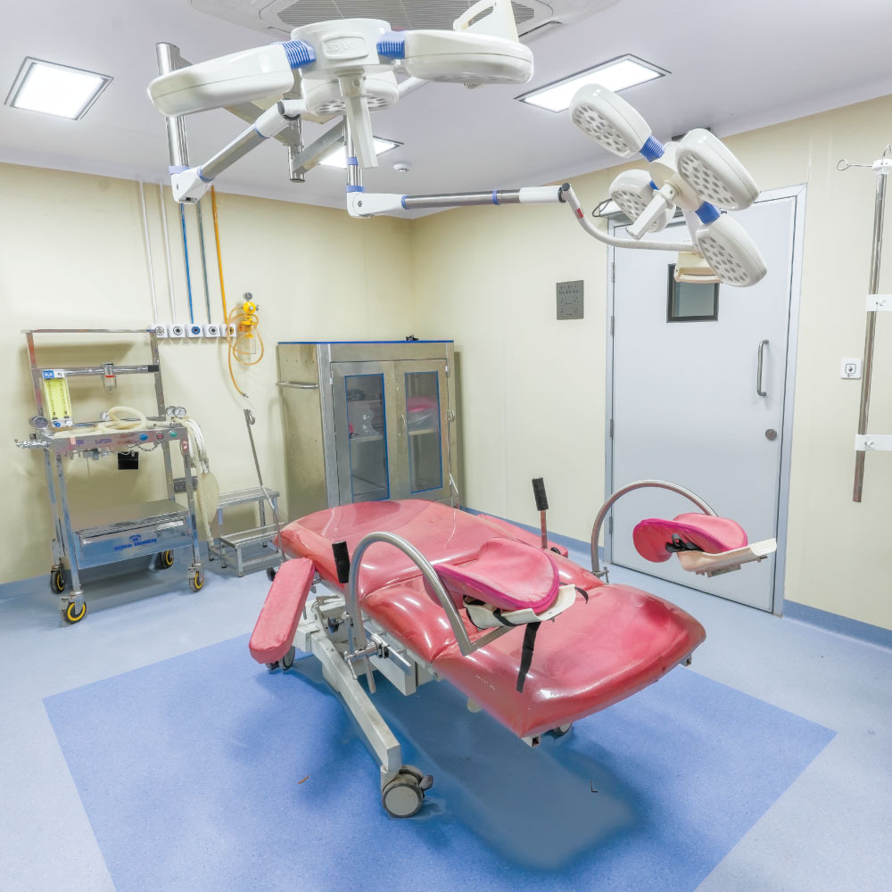
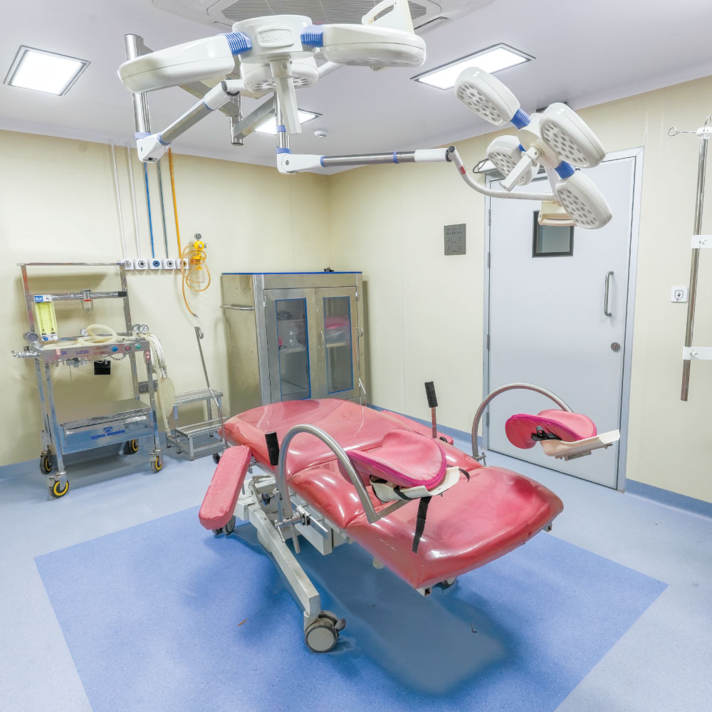

Safe & Happy Place For The Newborn
Caring for your child’s health is one of the greatest responsibilities you as a parent & us as a Pediatric Hospital carry. At Elite Women and child care Hospital we believe The First 24 Hours Should Be About Bonding Not Shifting Hospitals hence we have created the MULUND’s and possibly Mumbai’s Latest most advanced NICU.
- 24X7 Paediatric Support
- Super Specialist Pediatricians
LEVEL III TERTAIRY CARE NICU
- Baby warmers: which maintain the body temperature within limits.
- Phototherapy units: which is a good way to treat jaundice in newborns.
- Nitric Oxide System: For breathing issues in new borns. We are the only hospital in Mulund to offer continuous Inhaled Nitric Oxide (iNO) system.
- HFNC: High-Flow Nasal Cannula for oxygen support.
- HFOV: High-Frequency Oscillatory Ventilation for airflow support.
- Laminar Flow: To minimize the risk of infections.

 
